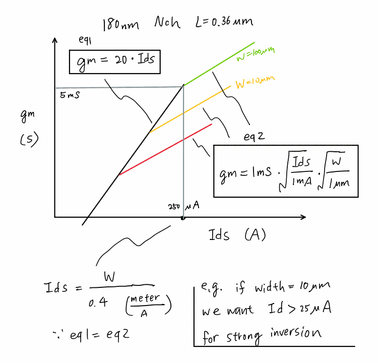

Type in W, L, id, M and the estimator computes gm, ro, vov, vth and cg from the first-order model on this page (diode-connected → Vds=Vgs, saturation). Pick the model source, device type and voltage flavor below the device.
sky130 curves also show the measured ngspice points (dots); other selections are the model only.
Model source
Device type
Voltage flavor
First-order saturation model: gm=√(2·µnCox·(MW/L)·id), vov=2·id/gm, ro=1/(λid) with λ=λ′/L, cg=Cox·MW·L. sky130/NMOS-1.8V uses measured params (Figure 3); other combinations are first-order estimates — replace with your PDK.
Loading sketch…

Figure 1 · The original bench sketch — a 180 nm NMOS, L = 0.36 µm. Everything below is a live, generalized version of it.
1. The two equations
Two straight-line asymptotes bound the transconductance of a MOSFET as you sweep its drain current:
eq 1 — weak / moderate inversion (the "gm/Id" limit)
In weak inversion the transistor behaves like a bipolar: \(g_m\) is simply proportional to \(I_d\), and the slope \(\kappa\) is set almost entirely by physics and temperature (\(\phi_t=kT/q\approx26\,\text{mV}\), subthreshold factor \(n\approx1.2\text{–}1.5\)) — not by the process node. The sketch uses κ = 20.
Here \(g_m\propto\sqrt{I_d}\), and the coefficient carries the process through \(\mu_n C_{ox}\). Matching the sketch's 1 mS·√(I_d/1mA)·√(W/1µm) form at \(L=0.36\,\mu\text{m}\) pins down the process constant:
Plugging the sketch's numbers (\(\mu_n C_{ox}=180\,\mu\text{A/V}^2,\ \kappa=20,\ L=0.36\,\mu\text{m}\)) gives a corner current density of 2.5 µA/µm — i.e. I_d = W / 0.4 with W in µm — exactly the "if W = 10 µm we want Id > 25 µA for strong inversion" note on the sketch. ✔
2. Live plot — gm vs Id
Figure 2 · Transconductance gm vs drain current Id — the weak-inversion line meets the √-law curve
eq 1: gm=κ·Id (weak inv.) W = 100 µm W = 10 µm W = 1 µm● corner (eq1 = eq2)
3. Reproduced with real sky130 data (ngspice)
Figure 2 is the first-order model. Here is the real thing — an ngspice DC sweep of the open-source SkyWater sky130_fd_pr__nfet_01v8 NMOS (L = 0.15 µm, Vds = 0.9 V, tt corner), with gm = dId/dVgs extracted at every step. Markers are sampled 4 per decade at 1 · 2.2 · 4.7 · 10, so they land evenly on the log axis. Deck + raw data in /spice.
Figure 3 · Real sky130 nfet_01v8 — gm vs Id (log–log), W = 1 / 10 / 100 µm
weak-inv. κ·Id (κ≈29 S/A, real) W = 100 µm W = 10 µm W = 1 µm
Real weak-inversion slope κ = (gm/Id)max ≈ 29 S/A — higher than the sketch's 20, because sky130's subthreshold factor n ≈ 1.3. Each curve hugs the κ line at low current, then rolls into the √-law region as the device enters strong inversion — exactly the shape of the hand sketch, but every point here is a simulated device, not an equation.
4. The constants vs. process node
Only one of the two constants really moves with the node. κ is temperature-limited and stays ≈ 15–25 everywhere; the process story lives in μnCox (thinner oxide raises \(C_{ox}\), but scaled/strained channels change \(\mu_n\)) and therefore in the corner current density. The table below is seeded with rough textbook estimates — edit any cell to your PDK and both the chart and the plot update.
These are order-of-magnitude teaching numbers, not fab data. Long-channel low-field μnCox varies widely with L, Vds, back-bias and flavor (LVT/HVT). For FinFET/GAA nodes μnCox loses its plain meaning (drive is quantized per fin) — use the gm/Id method with your PDK LUTs there. Replace the values with your own.
Node
μnCox (µA/V²)
κ (S/A)
Lmin (µm)
eq2 coeff* (mS)
corner Id/W (µA/µm)
*eq2 coeff = the "1 mS" in gm=coeff·√(Id/1mA)·√(W/1µm), evaluated at that row's Lmin; equals \(\sqrt{2\mu_nC_{ox}\cdot(1\text{µm}/L_{min})\cdot1\text{mA}}\). Corner density uses L = Lmin.
Figure 4 · First-order constants vs process node — κ (bold black, left axis) is temperature-limited and stays ≈flat; μnCox (right axis) carries the process
κ = (gm/Id)max (S/A) — left μnCox (µA/V²) — right corner Id/W at Lmin (µA/µm) — left◆ sky130 (open PDK)
5. How to use this as a design shortcut
Given a bias current, want max efficiency? Stay on the eq 1 line (weak/moderate inversion): \(g_m\approx\kappa I_d\) gives the most \(g_m\) per amp — great for low-power / low-noise front ends.
Given a target gm and headroom, want speed? Push into strong inversion (eq 2). You pay current but gain \(f_T\) and matching.
The corner is the design sweet spot. \(I_d/W = 2\mu_nC_{ox}/(\kappa^2 L)\) tells you the minimum current density for strong inversion. Below it you're wasting \(g_m\)/speed; far above it you're wasting power.